Portfolio Gallery
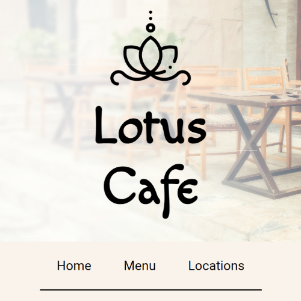
The Lotus Cafe
The Lotus Cafe
This is a website for a fictional restaurant, The Lotus Cafe. It is a simple website that was created as an exercise in responsive layout design. The text was generated by ChatGPT and the images are all free stock photos.
View code on GitHub 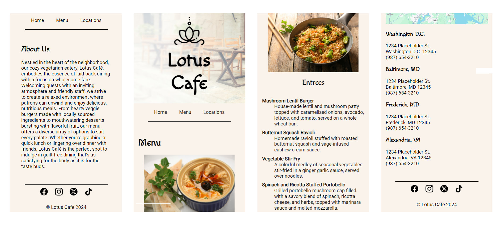 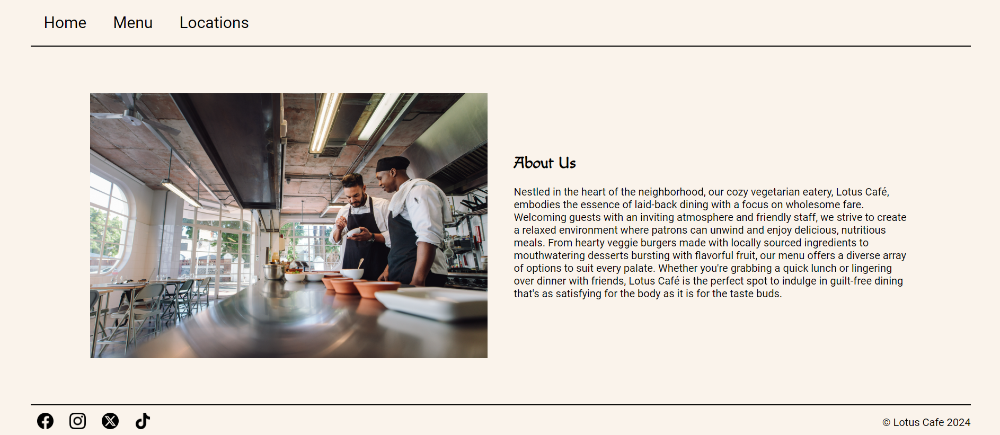
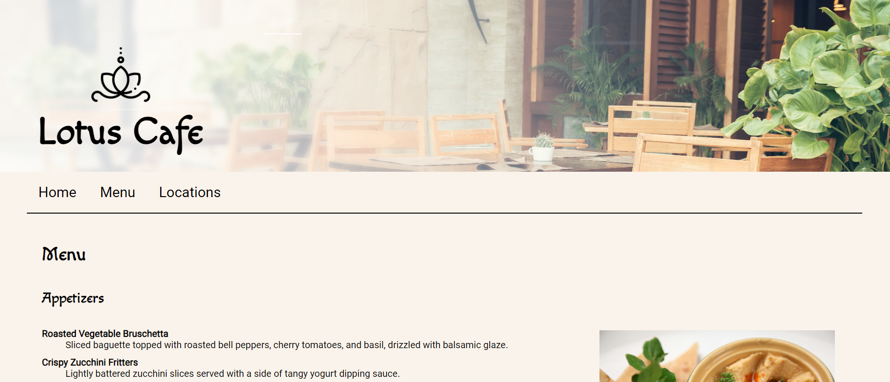
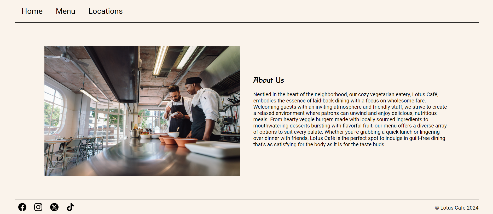
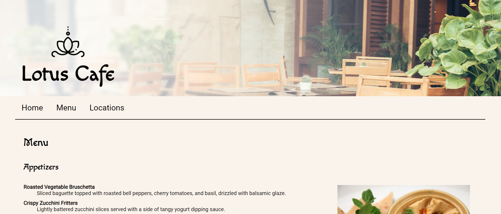

Astronomy Photo Randomizer
Astronomy Photo Randomizer
This project utilizes the NASA Astronomy Photo of the Day API to generate and display a random photo. This was an excersize in using APIs to pull and display data on a web page.
View code on GitHub 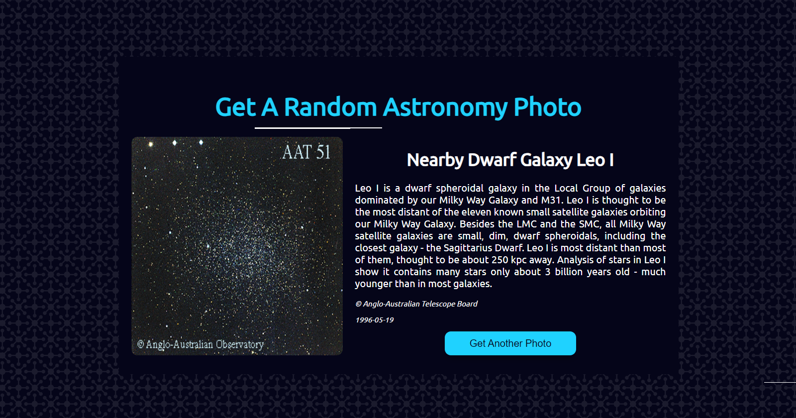 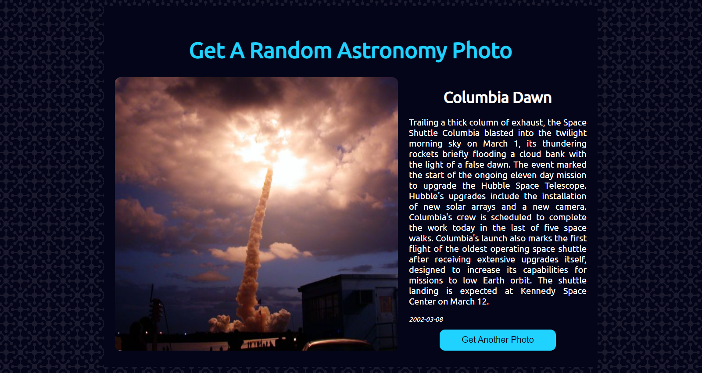
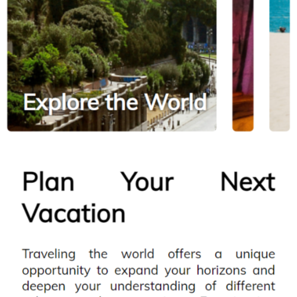
Travel the World
Travel the World
This project is a set of expanding images that could be used to showcase a variety of products. In this example, I used photos from around the world to make a very simple travel focused website.
View code on GitHub 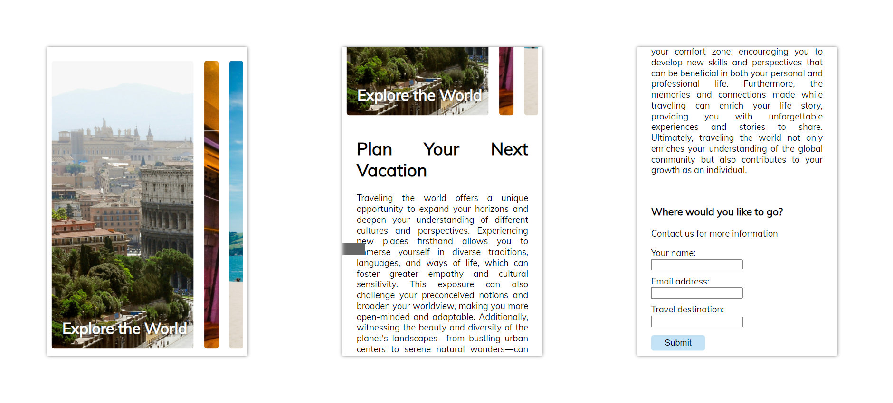 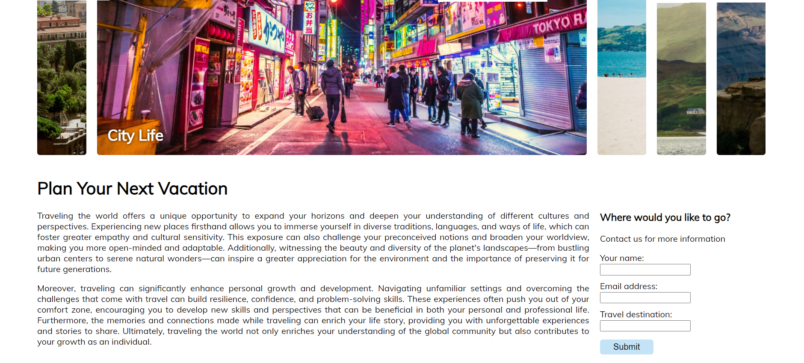